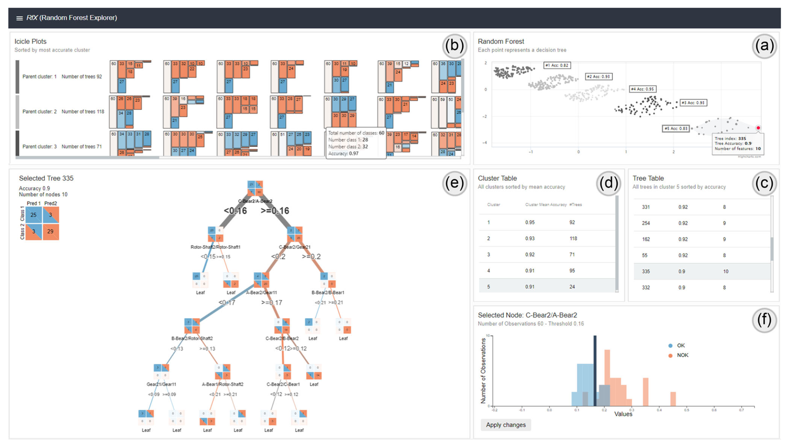

RfX: A Design Study for the Interactive Exploration of a Random Forest to Enhance Testing Procedures for Electrical Engines


Authors. Joscha Eirich, M. Münch, Dominik Jäckle, Michael Sedlmair, Jakob Bonart, Tobias Schreck
Venue. CGF (2022) Full Paper
Type. Full Paper
Abstract. Random Forests (RFs) are a machine learning (ML) technique widely used across industries. The interpretation of a given RF usually relies on the analysis of statistical values and is often only possible for data analytics experts. To make RFs accessible to experts with no data analytics background, we present RfX, a Visual Analytics (VA) system for the analysis of a RF's decision-making process. RfX allows to interactively analyse the properties of a forest and to explore and compare multiple trees in a RF. Thus, its users can identify relationships within a RF's feature subspace and detect hidden patterns in the model's underlying data. We contribute a design study in collaboration with an automotive company. A formative evaluation of RFX was carried out with two domain experts and a summative evaluation in the form of a field study with five domain experts. In this context, new hidden patterns such as increased eccentricities in an engine's rotor by observing secondary excitations of its bearings were detected using analyses made with RfX. Rules derived from analyses with the system led to a change in the company's testing procedures for electrical engines, which resulted in 80% reduced testing time for over 30% of all components.